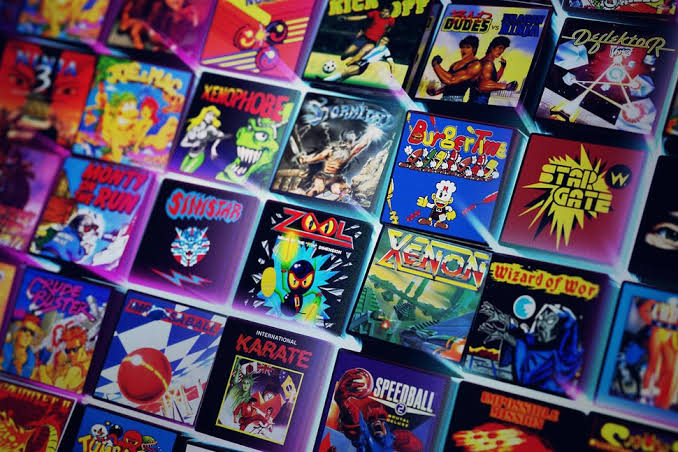
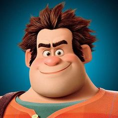

Retro game (ou retrogaming) é a prática de jogar e colecionar videogames, computadores e máquinas de fliperama de gerações passadas, especialmente dos anos 1980 e 1990.

Retro game (ou retrogaming) é a prática de jogar e colecionar videogames, computadores e máquinas de fliperama de gerações passadas, especialmente dos anos 1980 e 1990.

Um filme pensado nos Jogos retrôs de Fliperamas dos anos 80 e 90.
Detona Ralph (2012) foi totalmente concebido para homenagear a era de ouro dos fliperamas dos anos 1980 e 1990. A Disney misturou os jogos fictícios criados para a trama com dezenas de personagens clássicos licenciados de empresas como Nintendo, Sega, Capcom e Bandai Namco.



corrida doce